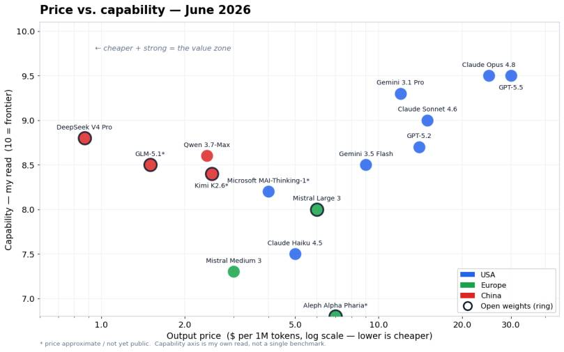
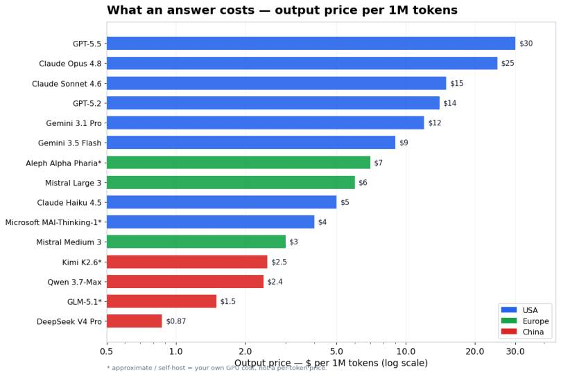
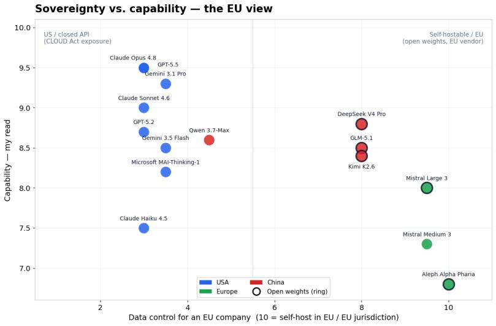

Almost every week someone asks me the same question: “Which AI model should we use?” I work not in a research lab, so I look at these models the way most of you do — from the outside, with a budget, a compliance team, and real data I am not allowed to leak. In this blog post I go through the latest AI models in June 2026 and sort them by price, capability and use case. I also do something most comparison posts skip: I look at what this means for European companies and data sovereignty. At the end I tell you plainly what I would choose.
A short warning first: this is the fastest moving topic I have ever written about. Almost every model below was released between April and June 2026. So treat this as a snapshot, not a law. The way of thinking will last longer than the model names.
Who are the players in June 2026?
It helps to group the models by where they come from. That is not politics — for a European company the origin of a model decides a lot about price, licensing and data control.
United States — the frontier labs.
– OpenAI ships GPT-5.5 (April 2026) as the flagship, with GPT-5.5-pro on top and the cheaper GPT-5.2 below it.
– Anthropic ships Claude Opus 4.8 (May 2026) as the flagship, with Claude Sonnet 4.6 for daily work and Claude Haiku 4.5 as the small, fast one.
– Google ships Gemini 3.1 Pro (the biggest context window on the market, 2M tokens) and the newer, cheaper Gemini 3.5 Flash.
– Microsoft is new on this list. At Build 2026 the Microsoft AI team released its first own family, including MAI-Thinking-1 — a mid-sized reasoning model trained from scratch, not distilled from someone else’s model. There is also MAI-Code-1 inside GitHub Copilot.
– xAI (Grok) is also out there, but for the European, enterprise-focused view of this post it plays a smaller role, so I keep the focus on the labs above.
Europe — the sovereign option.
– Mistral (France) ships Mistral Large 3, an open-weight model under the Apache 2.0 license, plus Medium 3 and the tiny Small 3.1. This is the model most European companies look at first.
– Aleph Alpha (Germany) with its PhariaAI platform is less a single model and more a full sovereign stack that runs inside German jurisdiction. After the Cohere merger in April 2026 it is the heavyweight for public sector and regulated industries.
China — the open-weight powerhouse.
– DeepSeek V4 (April 2026, MIT license) — the largest open-weight model right now.
– Alibaba Qwen — the open Qwen3.6-27B (Apache 2.0), but note the new flagships Qwen 3.6-Max and Qwen 3.7-Max are now closed.
– Moonshot Kimi K2.6 — a very strong agentic model, extremely cheap.
– Zhipu GLM-5.1 and MiniMax round out the field.
Note: “China” here mostly means open weights you can download and run yourself. That is a very different thing from sending your data to a Chinese API, and it matters a lot for the sovereignty part later.
What does performance look like?
Here is how I see price against capability. The price (x-axis) is the real, public output price per 1M tokens. The capability (y-axis) is my own read across coding, reasoning and agentic work — not a single benchmark, because every lab picks the benchmark that makes it look best.

Two things jump out:
- The top is crowded. GPT-5.5, Claude Opus 4.8 and Gemini 3.1 Pro sit at the very top. The gap between them is small and changes with every release. If someone tells you one of them is clearly “the best”, be careful.
- The open-weight models (the dots with a dark ring) moved up and left. DeepSeek V4 and the Chinese models now sit close to last year’s frontier — but at a fraction of the price. The US labs CAISI / NIST evaluation put the best open weights about 8 months behind the closed frontier. Eight months, not years. That is the real story of 2026.
Hint: when you read “beats GPT-5.5 on benchmark X”, check which benchmark and whose numbers. A model that wins on a coding benchmark can still feel worse in your actual workflow.
What does it cost?
Capability is only half the decision. The other half is the bill at the end of the month. This is the output price per 1M tokens — the part you pay for every answer the model writes.

The spread is huge. A frontier US model can cost 30–60x more per answer than a strong Chinese open-weight model. For a chat assistant used by a few people, the price does not matter much. For an agent that runs thousands of tool calls a day, it decides whether the project is affordable at all.
Hint: two levers cut these prices a lot. Prompt caching (up to ~90% off repeated input) and batch processing (about 50% off when you can wait). Use them before you switch to a weaker model.
The cheat sheet
| Model | Origin | Open weights | Price in / out ($/1M) | Context | I reach for it when… |
|---|---|---|---|---|---|
| GPT-5.5 | USA (OpenAI) | No | 5 / 30 | 1M | I want the strongest all-rounder and budget is not the issue |
| Claude Opus 4.8 | USA (Anthropic) | No | 5 / 25 | 1M | I do long, careful coding and agent work |
| Claude Sonnet 4.6 | USA (Anthropic) | No | 3 / 15 | 1M | Daily driver — most of my real work |
| Claude Haiku 4.5 | USA (Anthropic) | No | 1 / 5 | — | High volume, simple tasks, low latency |
| Gemini 3.1 Pro | USA (Google) | No | 2 / 12 | 2M | I need the biggest context (huge docs, whole repos) |
| Gemini 3.5 Flash | USA (Google) | No | 1.5 / 9 | 1M | Fast, cheap, still strong on coding |
| MAI-Thinking-1 | USA (Microsoft) | (in rollout) | low | — | I already live in the Microsoft / Copilot stack |
| Mistral Large 3 | Europe (FR) | Yes (Apache 2.0) | 2 / 6 | — | I want a strong model I can self-host in the EU |
| Mistral Small 3.1 | Europe (FR) | Yes | 0.2 / 0.6 | — | Cheap on-prem tasks, edge, classification |
| Aleph Alpha Pharia | Europe (DE) | Yes | sovereign stack | — | Public sector / regulated, German jurisdiction |
| DeepSeek V4 Pro | China | Yes (MIT) | ~0.3 / ~0.9 | 1M | Near-frontier quality at the lowest price |
| Kimi K2.6 | China | Yes (mod. MIT) | very low | — | Long agentic runs, thousands of tool calls |
| GLM-5.1 | China | Yes (MIT) | low | — | Strong coding model to self-host |
Note: prices change almost monthly and the cheap open-weight models cost you GPU time, not a per-token fee, when you run them yourself. Read the table as “order of magnitude”, not as a quote.
What about data sovereignty for European companies?
This is the part I care about most, and the part most US comparison posts ignore. From 2 August 2026 the main rules of the EU AI Act apply, with fines up to €35M or 7% of global revenue. At the same time, the discussion has moved from “where does the data sit” to “who controls the stack”.
Here is the uncomfortable truth: the US CLOUD Act lets US authorities compel a US company to hand over data — even if the servers are in Frankfurt or Zurich. So “EU region” on a US cloud is data residency, not full sovereignty. For many companies that is fine. For a hospital, a bank, a defence supplier or a public authority, it is often not.
I find it easiest to look at it as a map: data control on one axis, capability on the other.

- Top left — US closed APIs (GPT, Claude, Gemini, MAI). Highest capability, lowest data control for an EU company. Great models, US jurisdiction. Mitigate with EU regions, zero-retention agreements and Azure/Bedrock data boundaries — but it stays a US stack.
- Right side — open weights you run yourself. This is where sovereignty lives. The Chinese open-weight models (DeepSeek V4, GLM-5.1, Kimi K2.6) are MIT/Apache licensed, so you can download them and run them on a GPU server in a German data center. No personal data leaves your system. The model is Chinese; the deployment is fully yours.
- Far right — Mistral and Aleph Alpha. A European vendor, open weights or a sovereign on-prem stack, EU jurisdiction. This is the cleanest answer when “no US and no China dependency” is a hard requirement.
Note: a managed GPU server with ~96 GB VRAM for local inference is around €1,500/month. That is not nothing, but for a regulated company it is often cheaper and calmer than the compliance fight over a US API.
Important pitfall on “open”: Meta’s Llama 4 is often called open source, but its license restricts EU usage and adds a large-company clause. The Open Source Initiative does not accept it as open source. So for a European company, the truly clean open-weight options are Mistral and the Chinese MIT/Apache models — not Llama.
Strengths and weaknesses — the short version
- OpenAI GPT-5.5 — strongest all-rounder, huge ecosystem. Weakness: premium price, US jurisdiction.
- Anthropic Claude (Opus 4.8 / Sonnet 4.6) — my favourite for coding and long agent runs, very steady. Weakness: price at the top, US jurisdiction.
- Google Gemini 3.1 Pro — unbeatable 2M context and good price for the class. Weakness: behaviour changes a lot between versions.
- Microsoft MAI — interesting because it is cheap, efficient and sits right inside the Microsoft stack many of us already run. Weakness: brand new, still proving itself.
- Mistral — the European default: open weights, EU hosting, fair price. Weakness: a step below the absolute frontier on the hardest tasks.
- Aleph Alpha — the sovereign choice for public sector and regulated industry. Weakness: you pay for sovereignty, not for top benchmark scores.
- DeepSeek / Qwen / Kimi / GLM — frontier-near quality at the lowest price, open weights. Weakness: Chinese origin (a trust and governance question, even when you self-host) and a worrying trend of moving the best models to closed weights (Qwen-Max).
What I would actually choose
I do not use one model for everything. Here is how I split it:
- Daily coding and agents, no special data rules — Claude Sonnet 4.6, with Opus 4.8 for the hard parts. GPT-5.5 is an equally fine choice.
- Huge documents or whole-repo context — Gemini 3.1 Pro for the 2M window.
- High volume, cost-sensitive — a cheap open-weight model (DeepSeek V4 or Kimi K2.6), or Gemini 3.5 Flash / Haiku 4.5 if I want to stay on a managed API.
- Sensitive data, must stay in the EU — self-hosted Mistral Large 3. If “no US, no China” is a hard rule, this is my answer.
- Public sector / heavily regulated — Aleph Alpha Pharia, because German jurisdiction and the compliance story matter more than a benchmark point.
The honest summary: I would not give one model a “sovereignty pass” or a “quality pass”. I match the model to the task and to the data classification. The frontier US models for the hard, non-sensitive work — a European or self-hosted open-weight model the moment real data is involved.
Pitfalls I now avoid
- Trusting a single benchmark. Every lab cherry-picks. Test on your tasks for one afternoon — it beats any leaderboard.
- Ignoring the bill until production. A model that is 30x cheaper can be “good enough” and save a project. Decide price before you fall in love with a model.
- Reading “EU region” as “sovereign”. It is data residency. The CLOUD Act still reaches a US provider.
- Assuming “open” means open. Check the license (Llama restricts EU use; some Chinese flagships went closed). Apache 2.0 and MIT are the clean ones.
- Building hard against one API. Keep a thin abstraction so you can swap models. In 2026 the leader changes every few weeks.
Where this is heading
Two trends will shape the rest of 2026. First, open weights keep closing the gap — about 8 months behind the frontier today, and falling. For a European company that is the most important number on this whole page, because it means “sovereign” and “good enough” are finally landing in the same model. Second, price keeps collapsing, which makes agents that run all day actually affordable.
My advice has not really changed since I started writing about AI: pick the simplest model that does the job, keep your data where your compliance team can sleep at night, and stay flexible — because next month this whole list will look a little different again.
If you want to go one level deeper on running agents cost-effectively, I also wrote about the AI coding token budget. And for the rules themselves, the official EU AI Act timeline is the source I keep open.
I hope this is a little help when the next “which model should we use?” question lands on your desk.
Stay healthy, Cheers Jannik